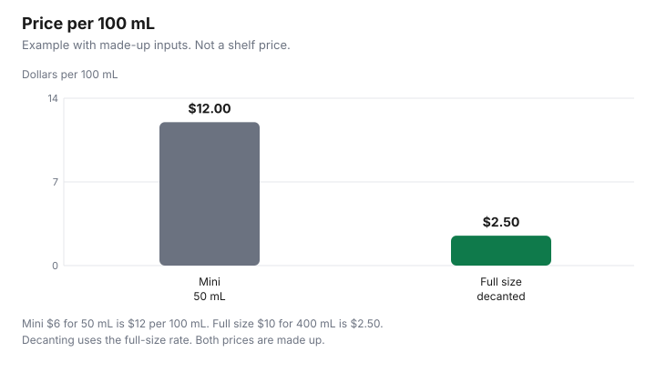

Personal Care · Canada
Travel Toiletries: Minis vs Refillable Bottles vs Solid Products
Refillable bottles usually beat travel minis on price per 100 mL: in this guide’s made-up example, a $6 50 mL mini is $12 per 100 mL, against $2.50 for a $10 400 mL bottle. For Canadian flights, CATSA allows containers of 100 mL or less in one clear bag of up to 1 L. A travel mini feels cheap because the sticker is small. The denominator is smaller still. Price per 100 mL is the sticker divided by the millilitres, times 100. On that measure, a mini of a product you already own is often the expensive way to move shampoo from your bathroom to a carry-on bag. This page compares minis, refillable bottles, solid products, and buying at the destination, using CATSA’s liquids rule as checked 29 Sep 2026. No shelf price is quoted. The chart is an example with made-up inputs.
Key takeaways
- Price per 100 mL is price ÷ mL × 100. Example with made-up inputs: a $6 mini of 50 mL is $12 per 100 mL. A $10 bottle of 400 mL is $2.50.
- CATSA: containers of 100 mL or 100 g or less, all inside one clear resealable bag of no more than 1 L, one bag per passenger. Page modified 2024-02-20, checked 29 Sep 2026.
- The examples include shampoo, creams, mascara, aerosol deodorant, and gel-based deodorant. A bar is not in that list. The screening officer decides.
- Decanting keeps the full-size rate. A leak or a bottle over 100 mL wastes the plan.
- Sunscreen still needs a DIN or an NPN and an expiry date. A hotel bottle is not that check.
Price per ml for minis
Read the metric size. A cosmetic label in Canada has to state net quantity in metric units, so a mini sold here should give you a number.
Divide the price by that number. Multiply by 100 to compare with a full size. Example with made-up inputs: a mini is $6 for 50 mL. Price per mL is $6 ÷ 50, which is $0.12. Price per 100 mL is $12. A full size is $10 for 400 mL, which is $0.025 per mL and $2.50 per 100 mL. The mini is 4.8 times the full-size rate inside the example, because $12 ÷ $2.50 is 4.8. That multiple is arithmetic on made-up prices, not a survey of airport shops. Replace both tags. If the mini is all you can buy and you have no bottle at home, the multiple is the cost of being unprepared, and it can still be the right purchase.
Do not compare a 50 mL mini with a 400 mL bottle you will throw out after one trip. The full-size rate only counts for millilitres you will use, at home or away. The toiletries price-check sheet is where the full-size stickers can sit before you travel. A strip of minis “for the year” is several denominators. Add them up. Three unused minis are not a bargain. They are three purchases.
| Option | Price arithmetic | Security note from CATSA | Waste |
|---|---|---|---|
| Mini | Price ÷ mL × 100. Example: $6 and 50 mL is $12 per 100 mL | Must be 100 mL or less and fit in the 1 L bag if it is a liquid, aerosol, or gel | A much higher price per mL. Leftover minis you will not use |
| Refillable bottle | Same rate as the full size you pour from. Example: $2.50 per 100 mL | The container still has to be 100 mL or less and fit in one 1 L bag | Leaks. A bottle filled over the limit |
| Solid product | Use cost per wash or per shower on the other guides | Not in the liquid, aerosol, and gel examples. The officer decides | A gel labelled as a gel is not a solid for this rule |
| Buy at destination | Whatever the local sticker is, including a sunscreen with a number and a date | You are not carrying the liquid through Canadian departure security | A hotel bottle that is not the product you meant |
Carry-on liquid rules (verify CATSA)
CATSA’s page “Liquids, non-solid food and personal items,” modified 2024-02-20 and checked 29 Sep 2026, says containers in your carry-on must be 100 mL or 100 g (3.4 oz) or less. All containers must fit in one clear, resealable plastic bag of no more than 1 L. The bag has to be transparent.
Each passenger gets a single 1 L bag. Approximate dimensions are 15.24 cm by 22.86 cm (6 in. by 9 in.) or 20 cm by 17.5 cm (8 in. by 7 in.). At the screening point, take the bag out of your carry-on and place it in a bin. Containers over 100 mL can go in checked baggage if they are not prohibited. The what-can-bring page says the final decision rests with the screening officer. Read the sign at your lane. The CATSA liquids guide on this site covers medicine exceptions, duty-free bags, and CT lanes in more detail. This page does not replace that one, and it does not replace the officer.
The liquids page lists examples. Liquids include shampoo, conditioner, mouthwash, toothpaste, liquid soap, perfume, creams and lotions, and liquid-based cosmetics such as mascara, liquid foundation, and liquid eyeliner. Aerosols include hairspray, shaving cream, sunscreen spray, and aerosol deodorant. Gels include hair gel, shaving gel, gel-based deodorant, and gel-based cosmetics. Those examples are why a “travel size” exists. They are also why a 200 mL bottle of a cream you love does not belong in the carry-on. Checked-baggage aerosols that are toiletry articles have a further limit on that page: 500 mL or 500 g per container, total net quantity not over 2 L or 2 kg, with the release valve protected by a cap. Some items are exempt from the 100 mL limit and do not have to go in the plastic bag, if you declare them. The list includes prescription medicines and essential non-prescription medicines such as pain relievers, cough syrup, decongestant spray, saline, and eye-care products. Sunscreen is not named in that exception list. Do not decide that your sunscreen is “medicine” because you would rather not buy a mini. A diabetic juice, baby milk, and breast milk are on the exception list with their own conditions. Read them on the CATSA page if they apply to your trip.
Refillable kits
A refillable bottle is a container you fill from the full size you already measured at home. The price per 100 mL does not reset when you pour.
In the example, decanting the $10 bottle keeps you at $2.50 per 100 mL, not $12. Label the bottle, because a clear fluid in a security bin is not self-explanatory, and because you will not remember which one is conditioner. Fill to 100 mL or less. Leave a little headspace so the cap can close. A bottle marked 100 mL that you fill past the shoulder is a bottle an officer can treat as over the limit. The kit’s own price belongs to the first trip: a made-up $15 set of bottles, used once, is $15 plus the product. Used across ten trips, it is $1.50 a trip before the product. That second figure is only true if you actually reuse the kit. Buy one kit. Do not buy a new one because the pouches were tidier in the photo.
Leaks are the failure mode. A cap that weeps inside the 1 L bag can empty a bottle and dirty the rest. Put liquids you care about in a second clear bag only if everything still fits in the one 1 L bag CATSA allows. You do not get two official bags. If a bottle will not seal, do not bring it. The solid and the mini are the backups, not a leaking favourite. Amazon.ca storefronts may sell the empty bottles. That is an offer type under the disclosure, not a reason to prefer one kit, and not a partnership this site claims.
Solid alternatives
A shampoo bar, a soap bar, or a solid deodorant avoids the liquid examples only if it is not a liquid, an aerosol, or a gel. CATSA’s list does not say “bars are always allowed.” It lists shampoo as a liquid and gel-based deodorant as a gel.
A shampoo bar is discussed as a cost-per-wash question on the shampoo bar guide, not as a security clearance. Bring the bar if you are prepared for an officer to look at it. Do not saw a bottle of gel into a tin and call it solid. The food section of the same CATSA page says a food is a solid only if it is solid at room temperature, and that a frozen liquid is still not allowed as a carry-on solid. That sentence is about food. It is a useful warning against a clever reading of the word solid. It is not a rule this page will rewrite for deodorant.
Solids still have a price. Use cost per wash or cost per shower, not price per 100 mL, because there may be no millilitres. A bar you bring and do not use is the same waste as a mini you bring and do not use. One bar for the trip, dry between uses so it does not turn to paste in a tin, is the practical version. If the destination is humid and the bar will sit wet, a 100 mL bottle of a product you know may be the calmer plan.
Hotel amenities
A bottle by the hotel sink is already inside the rate you paid for the room. It is not a free product in the sense that someone else is giving you a year’s supply.
It is a small bottle of whatever the hotel bought. If you like it, you can leave your own mini at home. If you do not like it, you are back to a mini, a decant, or a shop near the hotel. Do not assume the hotel bottle is a sunscreen with a Canadian DIN or NPN and an expiry date. Health Canada’s sunscreens page says approved sunscreens have one of those numbers and that all sunscreens have expiry dates. The sunscreen guide is that check. A face cream in a hotel amenity kit is a cosmetic you did not choose. Patch-test if your own products’ directions have taught you to, and stop if skin reacts.
Checking a bag so you can bring full-size bottles is a fee problem, not a toiletry problem. The checked-bag guide is where those airline charges belong. This page does not restate a fee. If the fee is larger than the minis you were trying to avoid, the full-size bottle in the hold was the expensive choice. Buying a ordinary soap or toothpaste at the destination can be cheaper than either, once you are there. Sunscreen is the item to solve before you fly if you want a number and a date you can read in Canada.

Sources & date stamps
- CATSA, Liquids, non-solid food and personal items, catsa-acsta.gc.ca, modified 2024-02-20, checked 29 Sep 2026. 100 mL or 100 g, one 1 L clear resealable bag, one bag per passenger, approximate dimensions, examples of liquids, aerosols, and gels, checked-baggage aerosol limits, and the exception list for medicines, baby food, and breast milk.
- CATSA, What can I bring?, checked 29 Sep 2026. The screening officer makes the final decision on whether an item is allowed through the checkpoint.
- Health Canada, Sunscreens, checked 29 Sep 2026. Approved sunscreens have a DIN or an NPN. All sunscreens have expiry dates.
- Health Canada, Labelling of cosmetics, checked 29 Sep 2026. Metric net quantity is required on a cosmetic.
- The $6, $10, 50 mL, and 400 mL figures are an example with made-up inputs. No airport or hotel price is quoted.
Frequently asked questions
Are travel-size toiletries a rip-off?
They are a rip-off when the price per 100 mL is many times the full size and you could have decanted the bottle you already own. In the example with made-up inputs, a $6 mini of 50 mL is $12 per 100 mL, and a $10 bottle of 400 mL is $2.50 per 100 mL. Those are not shelf prices. A mini is a fair buy when you have no full size to decant, or when you will not check a bag and you need a container that meets the security rule.
What are the carry-on liquid limits in Canada?
CATSA’s liquids page, modified 2024-02-20 and checked 29 Sep 2026, says containers must be 100 mL or 100 g or less and must fit in one clear resealable bag of no more than 1 L, one bag per passenger. Approximate bag sizes are 15.24 cm by 22.86 cm or 20 cm by 17.5 cm, and you take the bag out at the screening point. The screening officer makes the final decision.
Are solid toiletries allowed in carry-on?
CATSA’s examples of restricted personal items are liquids, aerosols, and gels, including shampoo, liquid soap, creams, mascara, aerosol deodorant, and gel-based deodorant, and a bar of soap is not in that list. The page does not print a blanket permission for every solid toiletry, and the what-can-bring page says the screening officer decides. A gel is still a gel if the package says gel, even when it feels firm in the tube.
Are refillable bottles worth it?
They are worth it when you already own a full size and the bottles you decant into are at or under 100 mL and fit in the 1 L bag. The price per 100 mL stays the full-size rate, which is the cheap side of the made-up example. They are not worth it if they leak, if you fill them over 100 mL, or if you buy a new kit for every trip and never reuse it. Count the kit in the first trip’s cost.
What should I buy at my destination instead?
Buy at the destination when the item is bulky, when you are unsure you will use it, or when a full-size bottle would push you into a checked bag whose fee exceeds the toiletries. Sunscreen is the awkward one: it is often a liquid or a cream, and a Canadian bottle should show a DIN or an NPN and an expiry date. Do not assume a hotel bottle is the sunscreen Health Canada describes. If you need a medicated liquid, read CATSA’s exception list and declare it.
Researched and drafted with AI assistance and fact-checked against official Canadian sources. How we create content.
Disclosure: Travel bottles and solid toiletries sold through Amazon.ca storefronts are an offer type. Saving Optimizer may earn a commission if a partner link is added later. No partnership is claimed with Amazon, an airline, or any brand. A storefront does not change the price per 100 mL or the security rule. Education only.